AI / Agent 晨间简报
生成日期：2026-07-10（周五）｜信息截止时间：2026-07-10 11:00:53 CST (UTC+0800)｜主题：recursive multi-agent orchestration、deep/wide web search、coding evaluation、MCP/Agent 工具链
1. 今日论文
选择理由：该论文于 2026-07-09 提交，晚于 2026-07-08 简报的信息截止时间；主题直接命中 agent 架构：用递归 delegation tree、search mode、web-probing 和同层经验复用来改进复杂网页信息搜索。
WebSwarm: Recursive Multi-Agent Orchestration for Deep-and-Wide Web Search
- 作者：Xiaoshuai Song, Liancheng Zhang, Kangzhi Zhao, Yutao Zhu, Zhongyuan Wang, Guanting Dong, Jinghan Yang, Han Li, Kun Gai, Ji-Rong Wen, Zhicheng Dou
- 发布日期：2026-07-09（arXiv submitted）
- 论文链接：arXiv:2607.08662；PDF；arXiv source
- 代码 / 项目页：截至本次检索，未发现作者公开代码仓库或独立项目页；论文页仅标注 “Work in progress”。
English overview
WebSwarm frames complex web search as progressive recursive delegation rather than a fixed one-shot decomposition. Each search node receives a local objective and a search mode, such as atom, deep, wide, or entity_collect. The node can solve directly, delegate child nodes, or revise its plan after receiving evidence from children. This lets the collaboration structure grow with the evidence instead of being fully decided before search begins.
The system adds two guidance signals. A lightweight web-probing agent first observes how relevant information is organized online, so wide expansion follows real evidence topology rather than surface semantics. For homogeneous sibling nodes, WebSwarm runs a small scout subset, extracts reusable process experience, and injects it into the remaining nodes. Across BrowseComp-Plus, WideSearch, DeepWideSearch, and GISA, WebSwarm outperforms single-agent ReAct and several multi-agent baselines, with large gains on difficult examples. Its main limitations are higher LLM/tool cost, reliance on base-model reasoning for delegation, and a current focus on text web tools rather than multimodal or GUI web interaction.
对应中文翻译
WebSwarm 把复杂网页搜索建模为渐进式递归委派，而不是一次性固定拆解。每个搜索节点都会收到一个局部目标和一个搜索模式，例如 atom、deep、wide 或 entity_collect。节点可以直接解决，也可以继续委派子节点，或在拿到子节点证据后修正计划。这样，协作结构会随着证据逐步展开，而不是在搜索开始前就被完全写死。
系统加入了两类引导信号。轻量级 web-probing agent 先观察相关信息在网页上如何组织，让 wide expansion 沿真实证据拓扑展开，而不只依赖问题表面的语义拆分。对于同质兄弟节点，WebSwarm 先运行少量 scout 节点，从轨迹中抽取可复用的过程经验，再注入到剩余节点。论文在 BrowseComp-Plus、WideSearch、DeepWideSearch、GISA 上显示，WebSwarm 优于单 agent ReAct 和多种多 agent baseline，尤其在困难样本上增益明显。局限是 LLM/tool 成本更高，委派仍依赖基础模型推理能力，并且当前主要面向文本网页工具，尚未覆盖多模态或 GUI 网页交互。
核心方法、实验结论与局限
- 方法：构建递归 delegation tree；每个节点绑定局部目标和搜索模式；父节点根据子节点返回证据继续扩展、修正或聚合。
- 创新：web-structure-guided expansion 用外部信息组织方式约束拆解维度；experience-guided node solving 在同一实例的同质兄弟节点间复用过程经验，避免重复试错。
- 主要结果：GLM-4.5 backbone 下，WebSwarm 在 BC-Plus ACC 达 68.00，比 GLM-4.5 ReAct 高 17.50；WideSearch Item F1 达 74.37，高 9.76；DeepWideSearch Item F1 达 58.40，高 11.77；GISA Overall 达 62.30，高 6.76。
- 局限：更多 LLM 调用和 web-tool 请求导致成本/延迟上升；delegation 与 search-mode assignment 仍依赖基础模型能力；当前主要处理文本网页工具，还没有系统覆盖图像、视频、音频或 GUI 操作。
关键表格转写
以下表格由 arXiv 源码转写；页面截图也按顺序附在后面，便于核对。
Table 1：四个 benchmark 上的主结果
| Method | Backbone | BC-Plus ACC | Wide SR | Wide Row F1 | Wide Item F1 | DeepWide SR | DeepWide Row F1 | DeepWide Item F1 | GISA Item | GISA Set | GISA List | GISA Table | GISA Overall |
|---|---|---|---|---|---|---|---|---|---|---|---|---|---|
| ReAct | Kimi-K2 | 66.50 | 7.00 | 37.42 | 67.65 | 3.95 | 27.58 | 53.57 | 18.18 | 57.18 | 48.76 | 58.34 | 54.58 |
| ReAct | Qwen3.5-35B | 56.50 | 5.00 | 37.38 | 64.82 | 3.95 | 28.79 | 52.46 | 27.27 | 55.76 | 51.72 | 56.03 | 53.74 |
| ReAct | Qwen3-235B | 21.50 | 3.00 | 20.89 | 49.15 | 0.00 | 11.75 | 36.12 | 40.91 | 52.37 | 36.48 | 43.93 | 45.57 |
| ReAct | GLM-4.5 | 50.50 | 4.00 | 33.23 | 64.61 | 3.95 | 20.08 | 46.63 | 27.27 | 51.27 | 50.58 | 59.78 | 55.54 |
| Swarm-Agent | GLM-4.5 | 64.50 | 6.00 | 36.66 | 68.79 | 1.32 | 27.03 | 51.41 | 31.82 | 54.43 | 52.33 | 60.66 | 57.05 |
| Flash-Searcher | GLM-4.5 | 54.00 | 5.00 | 36.53 | 68.68 | 5.26 | 25.17 | 50.00 | 18.18 | 54.91 | 56.85 | 56.72 | 54.22 |
| Table-as-Search | GLM-4.5 | 62.50 | 6.00 | 37.97 | 69.44 | 3.95 | 23.12 | 54.96 | 22.73 | 60.44 | 57.86 | 60.82 | 58.14 |
| ROMA | GLM-4.5 | 42.50 | 5.00 | 33.42 | 67.19 | 2.63 | 24.02 | 50.56 | 27.27 | 56.91 | 56.46 | 60.55 | 57.57 |
| InfoSeeker | GLM-4.5 | 59.50 | 4.00 | 39.98 | 71.91 | 2.63 | 25.81 | 55.10 | 27.27 | 54.58 | 57.31 | 40.82 | 58.99 |
| WebSwarm | GLM-4.5 | 68.00 (+17.50) | 7.00 (+3.00) | 44.14 (+10.91) | 74.37 (+9.76) | 6.58 (+2.63) | 29.64 (+9.56) | 58.40 (+11.77) | 40.91 (+13.64) | 61.03 (+9.76) | 66.04 (+15.46) | 63.69 (+3.91) | 62.30 (+6.76) |
Table 2：递归委派与搜索模式消融
| Method | BC-Plus ACC | WideSearch Item F1 | DeepWideSearch Item F1 |
|---|---|---|---|
| WebSwarm | 68.00 | 74.37 | 58.40 |
| w/o recursive | 63.50 | 68.38 | 55.79 |
| All-to-wide | 63.00 | 72.01 | 55.87 |
| All-to-deep | 67.50 | 69.94 | 54.51 |
Table 3：Web-probing 与经验复用消融
| Method | Wide Item F1 | Wide Web Tool | DeepWide Item F1 | DeepWide Web Tool |
|---|---|---|---|---|
| WebSwarm | 74.37 | 137.03 | 58.40 | 203.73 |
| w/o Web-Probing | 74.90 | 239.90 | 58.93 | 331.39 |
| w/o Experience | 71.20 | 132.57 | 55.48 | 220.07 |
Table 4：不同 backbone 下的迁移结果
| Backbone / Method | BC-Plus ACC | Wide Row F1 | Wide Item F1 | DeepWide Row F1 | DeepWide Item F1 |
|---|---|---|---|---|---|
| Qwen3-32B · ReAct | 12.00 | 5.43 | 29.11 | 3.28 | 20.53 |
| Qwen3-32B · WebSwarm | 19.50 | 9.01 | 34.47 | 7.06 | 25.54 |
| Qwen3.5-35B · ReAct | 56.50 | 37.38 | 64.82 | 28.79 | 52.46 |
| Qwen3.5-35B · WebSwarm | 61.00 | 47.54 | 75.91 | 35.90 | 58.34 |
论文图表与附录图表
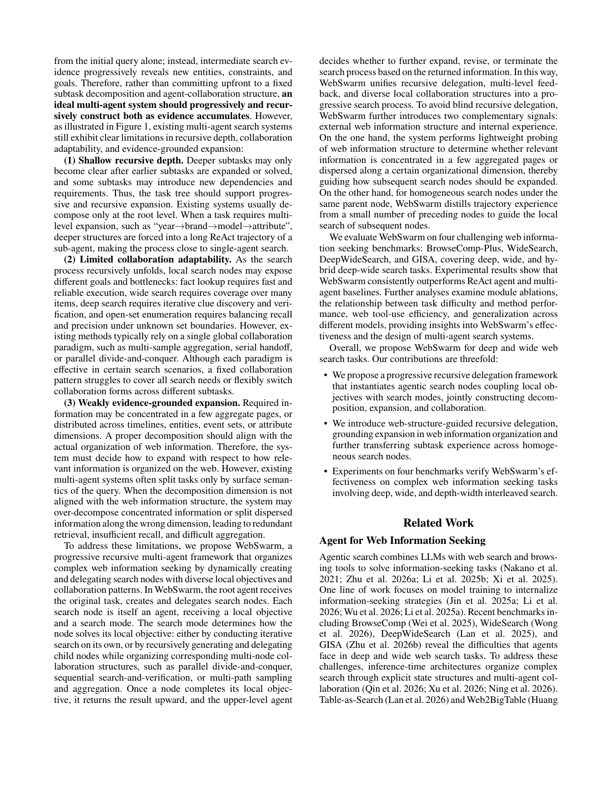
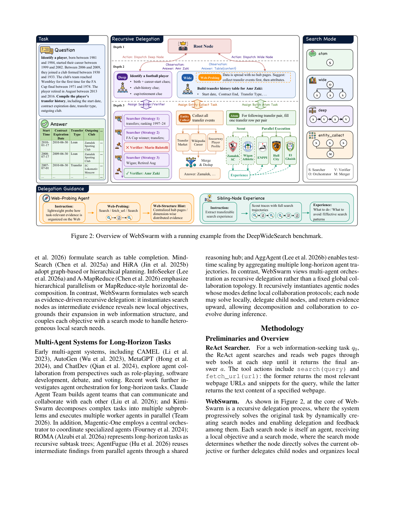
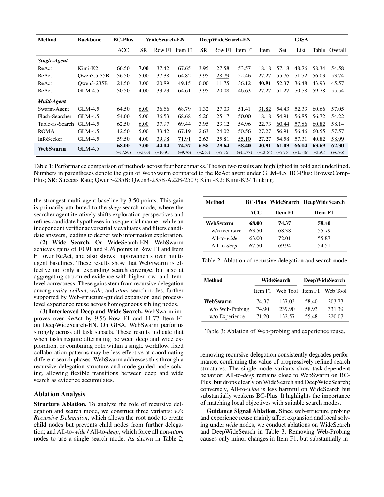
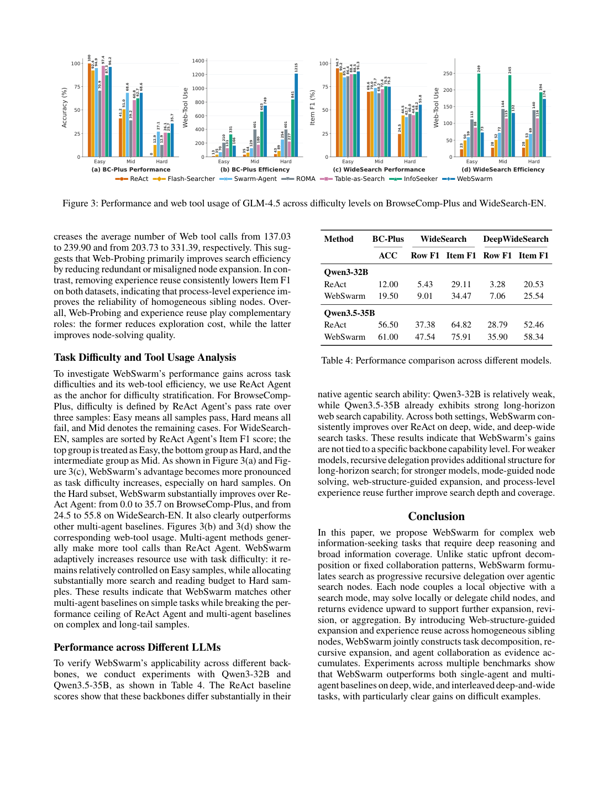
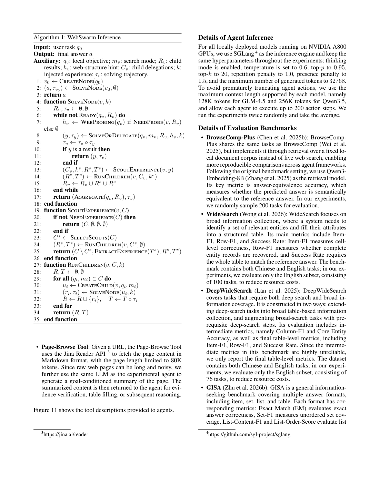
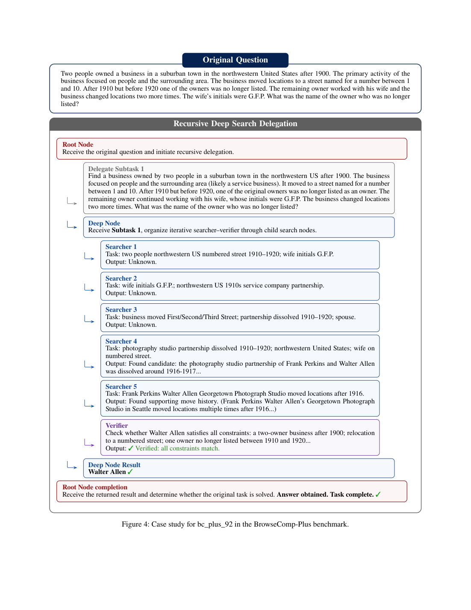
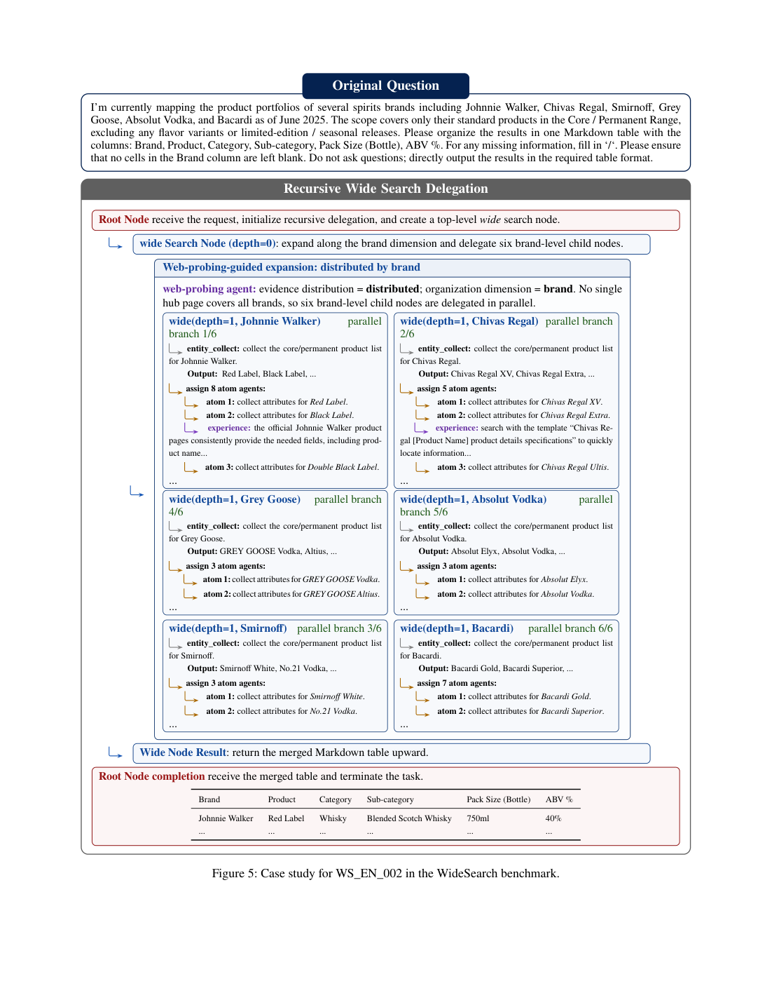
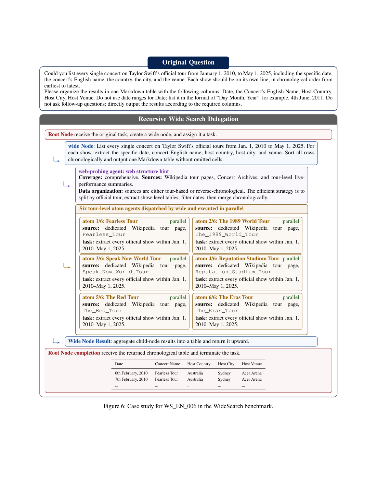
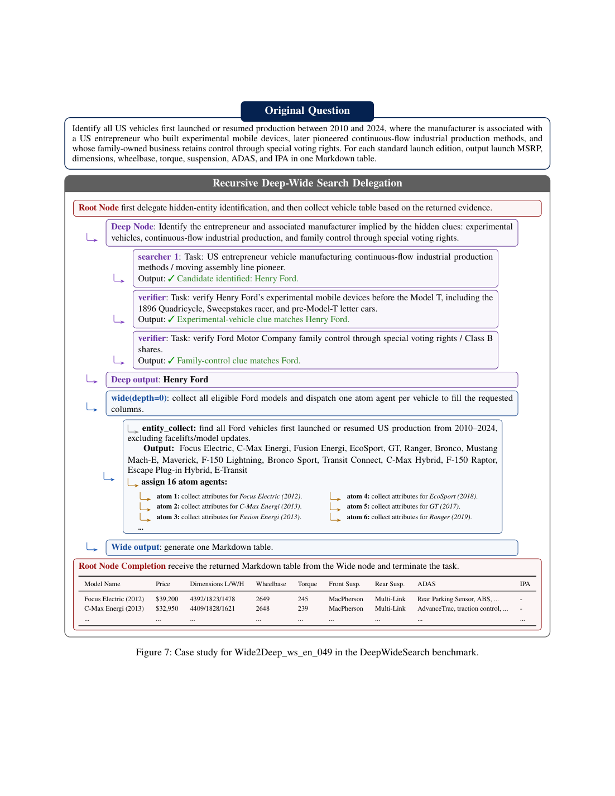
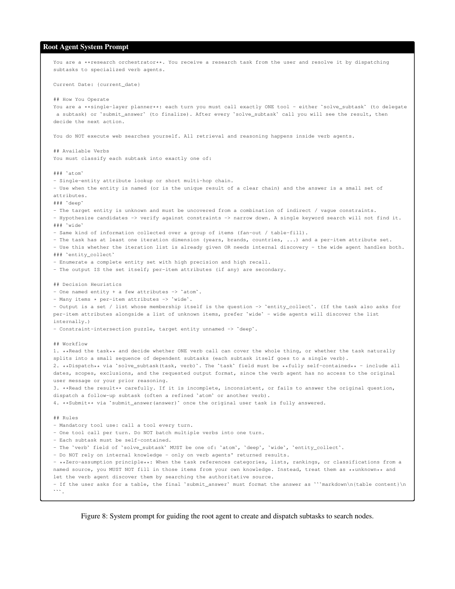
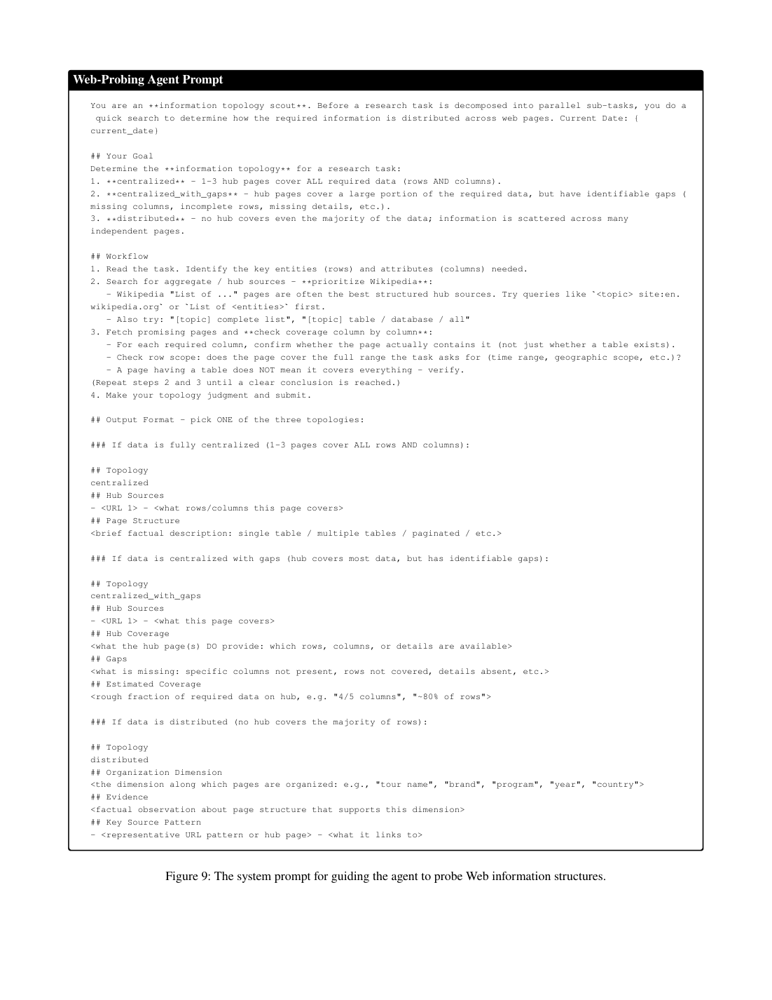
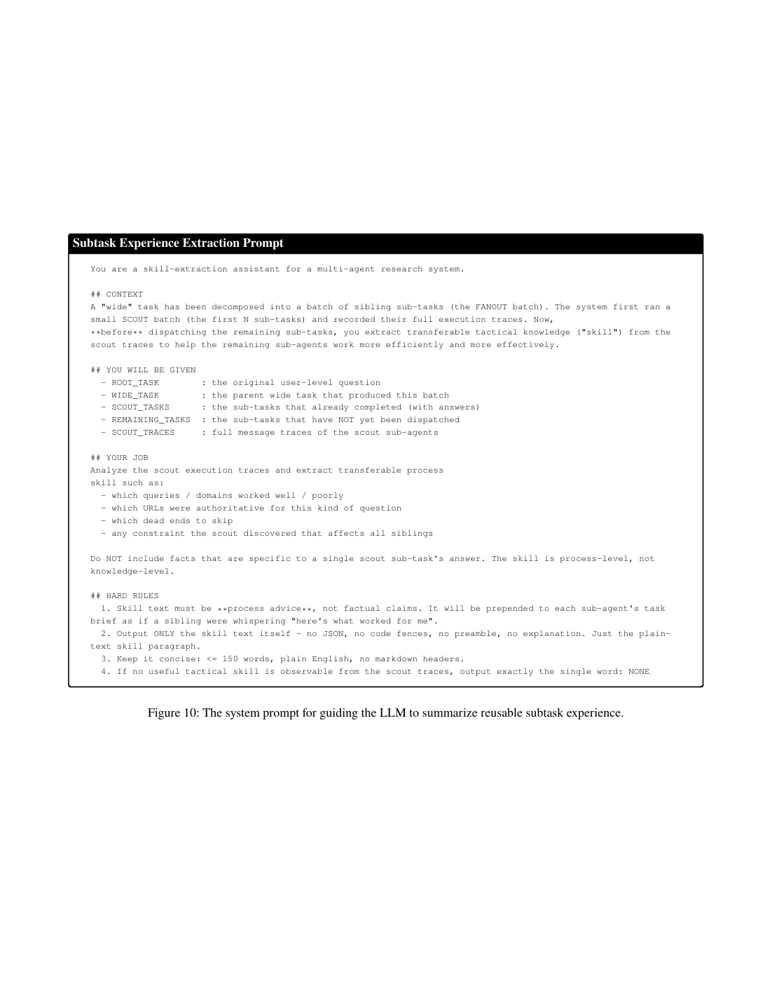
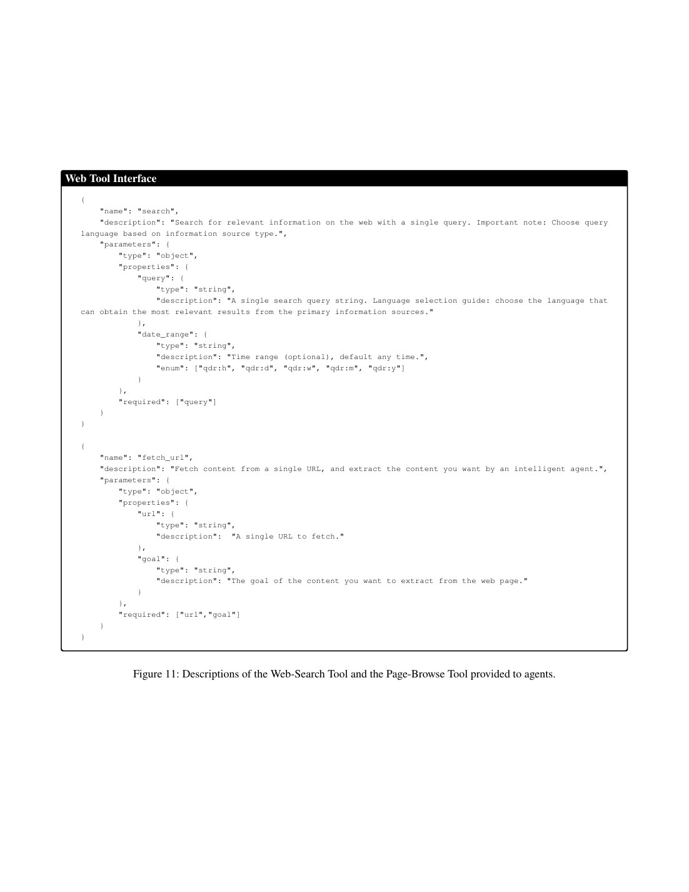
2. GitHub 三日增长项目
排名方法：工作区没有精确 72 小时前同口径快照；本次使用 2026-07-08 14:35 CST 日报快照到本次查询时间的差分，窗口约 44 小时，是透明短窗代理指标，不声称严格三日新增。
| 项目 | 用途简介 | 语言 | 最近更新时间 | 当前 stars | 2026-07-08 快照 | 短窗新增 |
|---|---|---|---|---|---|---|
| obra/superpowers | An agentic skills framework & software development methodology that works. | Shell | 2026-07-10T02:51:04Z | 250,962 | 249,061 | +1,901 |
| NousResearch/hermes-agent | The agent that grows with you | Python | 2026-07-10T02:49:06Z | 212,265 | 211,158 | +1,107 |
| firecrawl/firecrawl | The API to search, scrape, and interact with the web at scale. 🔥 | TypeScript | 2026-07-10T02:50:59Z | 148,470 | 147,403 | +1,067 |
| multica-ai/andrej-karpathy-skills | A single CLAUDE.md file to improve Claude Code behavior, derived from Andrej Karpathy's observations on LLM coding pitfalls. | 未标明 | 2026-07-10T02:50:42Z | 190,118 | 189,196 | +922 |
| farion1231/cc-switch | A cross-platform desktop All-in-One assistant for Claude Code, Codex, OpenCode, OpenClaw, Gemini CLI & Hermes Agent. Only official website: ccswitch.io | Rust | 2026-07-10T02:50:37Z | 115,332 | 114,523 | +809 |
3. GitHub 高 Star 未总结项目
筛选与排除：检查了工作区与归档目录下的 morning-brief*.html；凡此前 GitHub 板块、候选快照或已总结集合出现过的仓库均排除。另排除 JavaGuide、Front-End-Checklist 等泛学习/非 agent 主题仓库。以下按当前总 stars 降序排列。
| 项目 | 用途与核心能力 | 为什么值得关注 | 语言 | 最近更新时间 | 当前 stars |
|---|---|---|---|---|---|
| open-webui/open-webui | User-friendly AI Interface (Supports Ollama, OpenAI API, ...) | 自托管 AI 工作台，topics 含 MCP/RAG/openapi；适合作为 agent/工具接入和企业知识工作台的前端层观察样本。 | Python | 2026-07-10T02:48:53Z | 144,889 |
| D4Vinci/Scrapling | 🕷️ An adaptive Web Scraping framework that handles everything from a single request to a full-scale crawl! | 面向代理式网页采集的自适应 scraping/crawling 框架，topics 含 MCP server、Playwright、stealth 和 web scraping。 | Python | 2026-07-10T02:45:08Z | 68,914 |
| headroomlabs-ai/headroom | Compress tool outputs, logs, files, and RAG chunks before they reach the LLM. 60-95% fewer tokens, same answers. Library, proxy, MCP server. | 压缩 tool outputs、logs、files、RAG chunks 的上下文工程组件，带 MCP server，对长上下文 agent 成本控制很关键。 | Python | 2026-07-10T02:50:24Z | 58,194 |
| MemPalace/mempalace | The best-benchmarked open-source AI memory system. And it's free. | 开源 AI memory system，topics 含 memory/MCP，可跟踪 agent 长程记忆和可复用上下文方案。 | Python | 2026-07-10T02:46:48Z | 57,178 |
| Panniantong/Agent-Reach | Give your AI agent eyes to see the entire internet. Read & search Twitter, Reddit, YouTube, GitHub, Bilibili, XiaoHongShu — one CLI, zero API fees. | 给 agent 提供跨 Twitter/Reddit/YouTube/GitHub/B 站/小红书的读取与搜索能力，定位是 agent infrastructure。 | Python | 2026-07-10T02:49:27Z | 53,923 |
4. OpenAI / Anthropic 动态
检查窗口：自 2026-07-08 15:29 CST 上次日报截止后至本次截止时间。只使用 OpenAI / Anthropic 官方页面判定；第三方转述未用于发布状态判定。
OpenAI
| 标题 | 发布日期 | 官方链接 | 内容简介 |
|---|---|---|---|
| GPT-5.6 is now the preferred model in Microsoft 365 Copilot | Jul 9, 2026 | 打开 | OpenAI 将 GPT-5.6 接入 Microsoft 365 Copilot，强调更高 token 效率和跨 Word/Excel/PowerPoint/Cowork 的生产力能力。 |
| ChatGPT is now a partner for your most ambitious work | Jul 9, 2026 | 打开 | 发布 ChatGPT Work：可跨应用、文件、浏览器和桌面执行长任务，并说明 Codex 技术、Sites、Scheduled Tasks、Computer Use 与治理控制。 |
| GPT-5.6: Frontier intelligence that scales with your ambition | Jul 9, 2026 | 打开 | GPT-5.6 模型系列发布说明；与今日 agent/workflow 更新形成同一产品线背景。 |
| GPT-5.6 System Card | Jul 9, 2026 | 打开 | 部署安全系统卡，覆盖能力、安全边界和评估。 |
| Separating signal from noise in coding evaluations | Jul 8, 2026 | 打开 | 研究文章，讨论编码评测中如何区分真实能力信号与 benchmark 噪声，和本简报关注的 agent/coding benchmark 直接相关。 |
| Introducing GPT-Live | Jul 8, 2026 | 打开 | GPT-Live 产品更新；同时有 GPT-Live System Card。 |
| GPT-Live System Card | Jul 8, 2026 | 打开 | GPT-Live 的部署安全系统卡。 |
| OpenAI Bio Bug Bounty | Jul 9, 2026 | 打开 | 生物安全相关 bug bounty，属于安全/风险治理动态。 |
Anthropic
| 标题 | 发布日期 | 官方链接 | 内容简介 |
|---|---|---|---|
| UST is bringing Claude to physical AI | Jul 9, 2026 | 打开 | Claude Code 被用于芯片/硬件验证流程：读取 pinout 和 schematics，生成并运行 regression tests，并与数字孪生数据比对。 |
| Introducing a way to reflect on how you use Claude | Jul 9, 2026 | 打开 | Claude 反思面板 beta：汇总 1/3/6/12 个月使用模式、AI Fluency 维度，并提供 quiet hours / break nudges。 |
| Inviting hard questions | Jul 9, 2026 | 打开 | Anthropic 发起公众“hard questions”项目，并附官方影片/网站；偏治理与公众沟通，不是模型技术发布。官方视频：https://www.youtube.com/watch?v=jVbGX7zJHi8 |
官方视频：Anthropic “hard questions” 页面链接到官方 YouTube 影片 jVbGX7zJHi8；本次未在 OpenAI 官方 News 中发现新的官方视频条目。
5. 来源与方法
主要来源
数据限制与不确定性
- GitHub stars 为查询时实时值；增长榜采用约 44 小时短窗差分代理，未声称严格三日新增。
- OpenAI News 页面可通过浏览器检索核验，但本机 curl 对 openai.com 多数详情页返回 403；因此正文只引用官方 News 页面可核验的标题、日期和页面内容摘要。
- WebSwarm 未发现公开代码仓库；论文标注 Work in progress。论文图表来自 arXiv PDF 页面渲染，表格由 LaTeX 源码转写。
- 今天是周五，周六周报板块按规则完全省略。
GitHub star 快照：增长候选
| 仓库 | 当前 stars | 2026-07-08 快照 | 短窗新增 | 语言 |
|---|---|---|---|---|
| obra/superpowers | 250,962 | 249,061 | +1,901 | Shell |
| NousResearch/hermes-agent | 212,265 | 211,158 | +1,107 | Python |
| firecrawl/firecrawl | 148,470 | 147,403 | +1,067 | TypeScript |
| multica-ai/andrej-karpathy-skills | 190,118 | 189,196 | +922 | 未标明 |
| farion1231/cc-switch | 115,332 | 114,523 | +809 | Rust |
| anomalyco/opencode | 184,263 | 183,475 | +788 | TypeScript |
| affaan-m/ECC | 227,911 | 227,157 | +754 | JavaScript |
| browser-use/browser-use | 103,994 | 103,402 | +592 | Python |
| anthropics/skills | 159,852 | 159,275 | +577 | Python |
| anthropics/claude-code | 137,091 | 136,766 | +325 | Python |
| bytedance/UI-TARS-desktop | 37,878 | 37,789 | +89 | TypeScript |
| microsoft/playwright-mcp | 34,895 | 34,822 | +73 | TypeScript |
| openai/openai-agents-python | 27,770 | 27,728 | +42 | Python |
| continuedev/continue | 34,769 | 34,732 | +37 | TypeScript |
| ComposioHQ/composio | 29,153 | 29,134 | +19 | TypeScript |
GitHub star 快照：高 Star 候选与排除
| 仓库 | 当前 stars | 语言 | 处理 |
|---|---|---|---|
| open-webui/open-webui | 144,889 | Python | 新增总结 |
| D4Vinci/Scrapling | 68,914 | Python | 新增总结 |
| headroomlabs-ai/headroom | 58,194 | Python | 新增总结 |
| MemPalace/mempalace | 57,178 | Python | 新增总结 |
| Panniantong/Agent-Reach | 53,923 | Python | 新增总结 |
| google-gemini/gemini-cli | 105,875 | - | 此前日报出现 |
| openai/codex | 96,705 | - | 此前日报出现 |
| modelcontextprotocol/servers | 88,286 | - | 此前日报出现 |
| langchain-ai/langgraph | 36,921 | - | 此前日报出现 |
| Snailclimb/JavaGuide | 156,922 | - | 非 agent 主题 |
本次新增至“已总结仓库集合”的仓库
obra/superpowers, NousResearch/hermes-agent, firecrawl/firecrawl, multica-ai/andrej-karpathy-skills, farion1231/cc-switch, open-webui/open-webui, D4Vinci/Scrapling, headroomlabs-ai/headroom, MemPalace/mempalace, Panniantong/Agent-Reach。
归档与发布状态
PUBLISH_STATUS_PLACEHOLDER